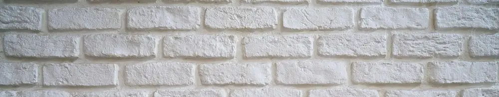

Panduan Lengkap: Cara Pasang dan Membersihkan Wall Foam Motif Bata yang Kekinian
Dipublikasikan pada 1 Agustus 2025

Akhir-akhir ini, saat melihat foto produk di marketplace atau video ulasan di media sosial, kita sering kali melihat wall foam berbentuk bata dengan beragam warna. Berkat harganya yang relatif terjangkau dan mudah ditemukan baik di toko online maupun offline, wall foam ini makin populer sebagai solusi dekorasi instan. Pernah melihat atau bahkan punya di rumah?
Wall foam ini punya tekstur khas, menyerupai susunan bata yang timbul di permukaan tembok. Saat disentuh, permukaannya terasa empuk. Ketebalannya pun bervariasi, tentu dengan rentang harga yang berbeda pula.
Cara Memasang Wall Foam dengan Mudah Tanpa Bantuan Tukang
Kabar baiknya, memasang wall foam ini sangat mudah dan bisa Anda lakukan sendiri tanpa bantuan profesional. Langkahnya sederhana:
- Bersihkan permukaan tembok yang akan ditempeli wall foam.
- Lepas lapisan tipis di bagian belakang wall foam, mirip seperti membuka stiker.
- Tempelkan ke tembok. Pastikan posisinya sudah rata sebelum menempelkannya sepenuhnya, karena lemnya cukup kuat. Setelah menempel, akan sulit untuk dilepas.
Sangat mudah, kan?
Tips Membersihkan Wall Foam yang Kena Noda Minyak
Salah satu keunggulan wall foam motif bata ini adalah kemudahannya saat dibersihkan. Tim Mas Tukang pernah mencoba membersihkan wall foam yang terkena noda berminyak, seperti cipratan kuah. Anda bisa membersihkannya sendiri dengan alat sederhana.
Yang Anda butuhkan hanyalah pembersih dapur dan lap bersih.
- Semprotkan pembersih dapur secara merata di atas noda pada permukaan wall foam.
- Lap permukaan wall foam dengan kain bersih dan kering secara perlahan.
Prosesnya tidak sulit, bukan? Namun, ada satu hal penting yang perlu Anda perhatikan: jangan menggosok terlalu keras. Permukaan wall foam yang lembut bisa terkelupas jika Anda mengelapnya terlalu kasar. Gunakanlah kain dengan permukaan lembut, seperti lap microfiber, untuk hasil terbaik.
Bagaimana, mudah sekali kan untuk memasang dan membersihkan wall foam motif bata yang kekinian ini? Video singkat tentang cara membersihkan wall foam dapat ditonton di bawah ini. Semoga bermanfaat, ya!